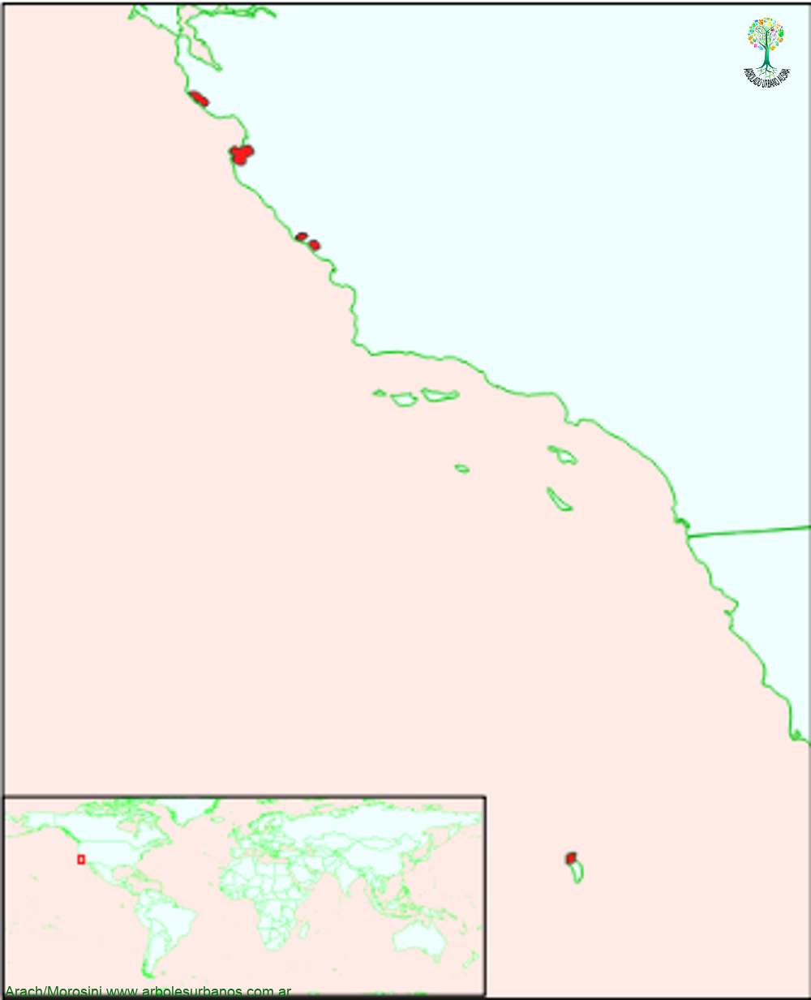

Click en las imágenes para ampliar

{kind=link}
{kind=link}
{kind=link}
Pino de Monterrey, Pino insigne
NOMBRE CIENTÍFICO: Pinus Radiata
FAMILIA BOTÁNICA: Pináceas
ORIGEN: Esta especie tiene un área de dispersión muy reducida, en tres zonas de la costa del estado de California principalmente en la zona de la Bahía de Monterrey, y en las islas de la costa del en Estados Unidos, también más al sur en las islas Guadalupe y Cedros (México)
DESCRIPCIÓN GENERAL: Esta especie de corta longevidad, se desarrolla por completo, en su lugar de origen, entre los 80 y 100 años, raramente supera los 150 años. Llegando a tener una altura de entre 20 y 30 metros de altura y un diámetro de más de un metro, pero en los lugares donde se lo cultiva, llega a superar largamente este tamaño. Su copa es característica, de forma anchamente globosa. Tiene una corteza grisácea que al madurar el árbol se oscurece un poco, se vuelve gruesa y profundamente surcada longitudinalmente.
HOJAS: Las hojas son acículas perennes y forman grupos de a 3, miden hasta 15 cm. de largo son de color verde oscuro, cuando empiezan a salir los brotes son de color verde grisáceo.
ESTRÓBILOS: Los masculinos se encuentra formando grandes grupos, son de color amarillos claro, las femeninas son rojizas y miden entre 1 y 2 cm. de largo y se disponen en forma de verticilos.
Las piñas son duras y pesadas, de hasta 15 cm. de largo, de forma asimétrica, ya que las escamas se desarrollan más de un lado que de otro. Son de color marrón claro, pero pueden ser de color gris, porque pueden permanecer muchos años adheridas a las ramas sin abrirse, se abren con el fuego, es una adaptación a los incendios que ocurren regularmente en su área de dispersión natural.
USOS: Su madera es clara y liviana, se la utiliza en embalajes, debovinado, construcción y también para pasta de celulosa. Ornamentalmente se lo utiliza como ejemplar único o en grupos, sobre todo por su velocidad de crecimiento.
REPRODUCCIÓN: La multiplicación se realiza por semillas
PARTICULARIDADES: Es la especie de pino que más se cultiva en el mundo en países tan diversos como Chile, Uruguay, Sudáfrica, Kenia, España o Nueva Zelanda. En la región se realizaron algunas plantaciones, donde mejor a crecido es en la zona del noroeste de la provincia de Chubut, entre las dificultades que tiene en esta zona es que sus ramas no resisten las nevadas importantes.